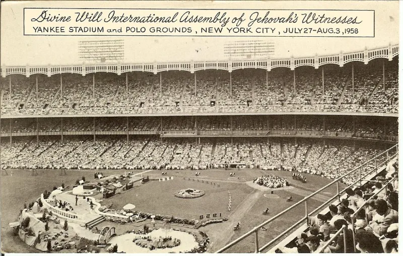
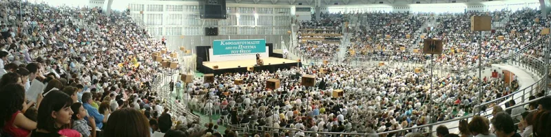

No good counter-argument has been published by the Watchtower.
Watchtower doctrine splits Christians in two. Only 144,000 anointed are born again.
They go to heaven, they are in the new covenant, and they are sons of God. Everyone else is the great crowd, about 99.9% of Witnesses.
They hope to live forever on earth as God's friends. They are "not participants in the new covenant" (The Watchtower, February 1, 1998, p.
18). They neither need nor want to be born again.
Jesus made it the condition for everyone. "Unless anyone is born again, he cannot see the Kingdom of God" (John 3:3).
Their own Bible reads at 1 John 5:1: "Everyone believing that Jesus is the Christ has been born from God." Paul writes that anyone without Christ's spirit does not belong to him (Romans 8:9). Watchtower teaching keeps that spirit for the 144,000.
Scripture itself distinguishes groups. There is a little flock given the Kingdom (Luke 12:32) and there are other sheep (John 10:16).
Revelation sets the sealed 144,000 beside a great crowd nobody can number. Psalm 37:29 and Matthew 5:5 promise that the meek inherit the earth, so an earthly class is needed.
And 1 John 5:1, they say, addresses those with the heavenly calling in John's own day.
John 10:16 says the other sheep are brought in so there is one flock and one shepherd. That is the opposite of a permanent split.
The great crowd stands before the throne, beside the angels and elders (Revelation 7:9-11). And the 144,000 in Revelation 7:4-8 are male virgins from twelve named tribes of Israel.
Every one of those details is read as symbolic, except the number.
Strong for you. Restricting the word "everyone" in 1 John 5:1 is special pleading their own translation resists.
No published answer deals with the fact that every New Testament letter addresses all believers as anointed sons in the covenant.
"Read John 3:3 to me. Does Jesus put anyone outside that requirement?"


Scripture itself names a 'little flock' and 'other sheep,' and the meek inherit the earth.
Witnesses argue that Scripture itself distinguishes groups. There is a 'little flock' given the Kingdom (Luke 12:32). There are 'other sheep' (John 10:16).
Revelation contrasts the sealed 144,000 with a great crowd nobody can number, standing before the throne. They read that crowd as on earth, before God's attention. Psalm 37:29 and Matthew 5:5 promise that the meek inherit the earth, which requires a class with an earthly hope. And 1 John 5:1, they say, describes those with the heavenly calling in John's first-century audience. It does not describe all believers of all time.
Strong for you. John 10:16 makes 'one flock,' not two classes.
The doctrine is admitted, and the criticism is unrefuted. The other sheep of John 10:16 are expressly brought into 'one flock, one shepherd.' That is the opposite of a permanent two-class split.
The great crowd is located before the throne, where the angels and the elders are (Revelation 7:9-11). And restricting the word 'everyone' in 1 John 5:1 is special pleading that their own translation resists.
No Witness response engages the larger fact. Every New Testament letter addresses all believers as anointed sons within the covenant.